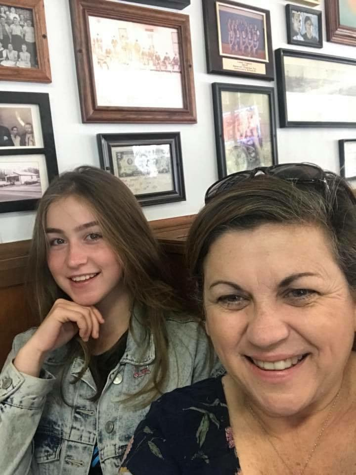

У 2018 році я виграла грант програми обміну «Flex» на безкоштовне навчання в США протягом 10 місяців.
Я попала в штат Міссісіпі, у невеличке місто Салтілло. Моя host family складалася з двох людей:
локального директора телекомунікаційної компанії Бабби Найт та фотографки Діани Найт.
Їхній син, Кейс, вже давно не живе з ними, адже працює у Вашингтоні в Білому Домі.
Цей рік за обміном був неймовірним, адже я знайшла вірних друзів, що найближчим часом відвідають мене в Україні.
